| age | 2011 | 2012 | 2013 | 2014 | 2015 | 2016 | 2017 | 2018 | 2019 | 2020 | 2021 |
|---|---|---|---|---|---|---|---|---|---|---|---|
| 14 | 583 | 524 | 446 | 378 | 318 | 305 | 280 | 281 | 270 | 244 | 219 |
| 15 | 712 | 619 | 528 | 443 | 369 | 339 | 315 | 304 | 272 | 262 | 246 |
| 16 | 810 | 723 | 615 | 482 | 426 | 365 | 328 | 334 | 314 | 302 | 257 |
1 Introduction
A data visualisation presents data values in a visual format. In an effective data visualisation, this allows properties of the data to be perceived very rapidly and without conscious effort. For example, Table 1.1 shows data on the crime rate for youth offenders in New Zealand, for the ages 14 to 16, for each year from 2011 to 2021. With this purely text-based, tabular presentation of the data, it requires considerable time and effort to determine any trends in the crime rates.
By contrast, with a simple line plot data visualisation like Figure 1.1 we can perceive the trends in crime rates easily and immediately. It is also easy to perceive more detailed properties like the fact that the trend in crime rates for 16-year-olds is not completely monotonic and the fact that the crime rate for 15-year-olds (the blue line) is always greater than the crime rate for 14-year-olds (the red line) and less than the crime rate for 16-year-olds (the green line).

Figure 1.2 shows a different data visualisation of the same data, this time a heatmap. If we use a data visualisation like Figure 1.2, detecting overall trends becomes more difficult and perceiving detailed changes in the crime rates is very much harder. Not all data visualisations are equally effective.

Although Figure 1.1 is very effective for the questions that we have considered so far, it is far less effective if we are interested in a different question, for example, whether the total crime rate is completely monotonic. Does the sum of the red, blue, and green lines always decrease year on year? A single data visualisation cannot be effective for all possible questions.
Suppose that we are interested in what the exact crime rate was for 16-year-olds in 2011. Neither Figure 1.1 nor Figure 1.2 is the best option for answering this quesion. The best option in this case is actually Table 1.1.
What makes a data visualisation effective? Why are some data visualisations more effective than others? The purpose of this document is to provide explanations for why, when, and how data visualisation works.
1.1 How will it help?
You may have heard that statisticians hate pie charts.1 But do you know why? Do pie charts have any redeeming features?
Conversely, bar plots are extremely popular, but why are they so good? Knowing more about why different plots work for different situations will help us to make better decisions about when to use what sort of data visualisation.
There is a lot of useful information and understanding about how data visualisations work, but it is distributed throughout and embedded within a very broad, deep, and detailed data visualisation literature. There is a need for a simple, coherent explanation that is accessible to a less expert audience.2
Understanding how data visualisation works will enable us to:
- Decide which data visualisations we should use.
- Justify our choice of data visualisation.
- Critically analyse data visualisations created by others.
- Reason about how to improve the effectiveness of a data visualisation.
- Reason about whether a novel visualisation will be effective.
1.2 Scope
The focus of this document is static data visualisations for presentation. The assumption is that our data values have an interesting property and we want to produce a display that makes it easy and efficient for viewers to perceive that property. Some of the information that we cover will also apply to interactive graphics and to exploratory graphics, but the specific requirements of those types of data visualisation will not be addressed.3
This document is also focused on what vision science has to tell us about effective data visualisation. We will consider factors that influence how rapidly and how accurately information can be extracted from a data visualisation. This will include findings from a broad range of research, encompassing Statistics, Computer Science, Psychology, and Cartography.4
However, this document does not cover all fields of research that impact on data visualisation. We will not, for example, address the ethical use of data visualisation, beyond a basic assumption that we want to faithfully represent the properties of the data.5
This document is also aimed at a numerate audience, so we assume an appreciation of the importance of collecting the right data in the right way for the questions that we hope to answer.6
It is also important to acknowledge that vision science cannot yet tell us everything about how data visualisation works. However, what is known will help us to have some understanding of why some data visualisations are so effective and others are less effective.
As well as being a synthesis of a large range of data visualisation research, this document is also a simplification of that research. Some details are smoothed over and some details are just left out. The goal is to provide a framework that is easy to understand by non-experts and easy to apply to a broad range of data visualisations. References to the relevant literature are provided in footnotes so that the interested, or sceptical, reader can dig deeper.
1.3 Terminology
Data visualisations come in a wide variety of forms (see Figure 1.3), with each form having its own name: scatter plots, line plots, bar plots, histograms, etc. There are also many different names for the different components of a data visualisation: lines, bars, points, axes, scales, legends, keys, titles, sub-titles, etc.
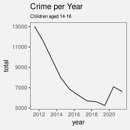
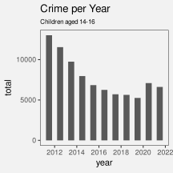
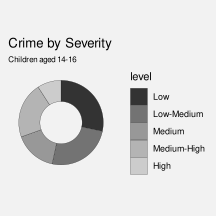
In this document, we will reduce that complexity in two ways. First of all, we will not distinguish between different forms of data visualisation; scatter plots, bar plots, line plots, and histograms are all just data visualisations. Secondly, we will distinguish between only three core components of a data visualisation: data symbols, guides, and labels.7
- Data symbols
- Data symbols are the geometric shapes that represent data values, for example, the lines in a line plot, the bars in a bar plot, and the segments of an annulus in a donut plot (see Figure 1.4). We will spend a lot of time looking at how data symbols work.
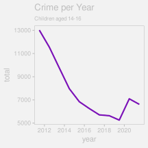
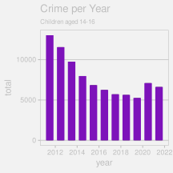
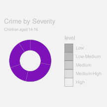
- Guides
- Guides are the elements of a data visualisation that explain how data values are represented, for example the axes on a line plot or bar plot and the legend on a donut plot (see Figure 1.5). We will see later that guides have a lot in common with data symbols (see Section 13.2).
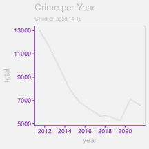
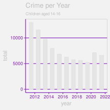
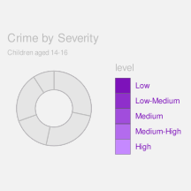
- Labels
- Labels are the text elements that provide context and background information about a data visualisation (e.g., titles and captions). Labels may also guide the viewer to the important properties of the data. Notice that not all text elements are labels.
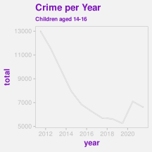
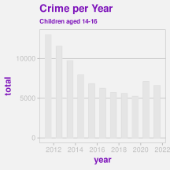
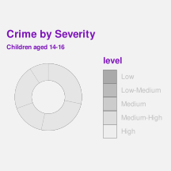
1.4 Mappings
Although we have reduced a data visualisation to just three components, data symbols, guides, and labels, there are still many possible variations. Which data symbols are being used? How are the axes labelled? What colours are being used? As much as possible, we are going to further reduce the design of a data visualisation to a single question: What mappings are being used?8
Much of this document is focused on considering how data values are being mapped, or encoded, into a visual representation. For example, in the line plot of crime rates for different ages in New Zealand in Figure 1.1, the data values are year, crime rate, and age (see Table 1.1) and the data symbols are a set of coloured lines.
We can describe this data visualisation in terms of a set of mappings (see Figure 1.7):
Each
yearvalue is encoded as a horizontal position along the x-axis and eachratevalue is encoded as a vertical position along the y-axis. For example, theyear2011 maps to a location near the left edge of the plot and therate810 maps to a position near the top edge of the plot.
The combined values ofyearandrateare encoded as the locations through which we draw the coloured lines.Each
agevalue is encoded as a colour. For example, theage16 maps to a green colour. Theagevalues are encoded as the colours of the lines.
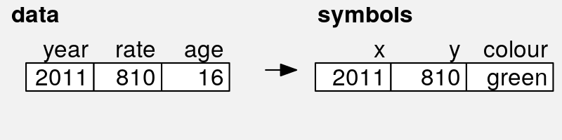
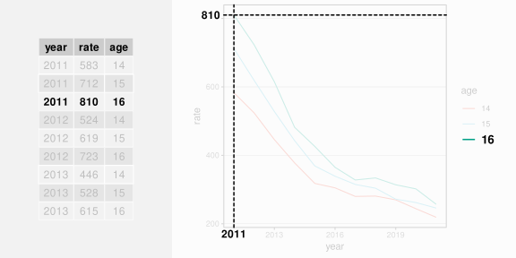
year, rate, and age to x and y positions and colour.
The heatmap of the same data (see Figure 1.2) provides a different visual representation because it involves different data symbols, rectangles this time, and a different set of encodings (see Figure 1.8):
Each
yearvalue is encoded as a horizontal position along the x-axis and eachagevalue is encoded as a vertical position along the y-axis. For example, theyear2011 maps to a location near the left edge of the plot and theage16 maps to a position near the top edge of the plot.
The combined values ofyearandrateare encoded as the locations at which we draw the coloured rectangles.Each
ratevalue is encoded as a colour. For example, therate810 maps to white, while lowerratevalues map to progressively darker shades of purple. Theratevalues are encoded as the colours of the rectangles.
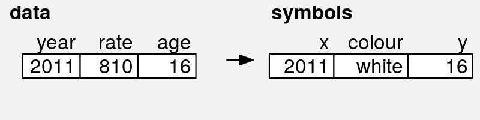
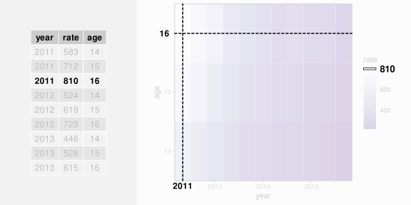
year, rate, and age to x position, colour, and y position.
We will look at a variety of different encodings from data values to data symbols (Figure 1.9). Understanding why some encodings work better than others will help us to understand why some data visualisations are more effective than others.

1.5 How to read this document
ADD basic navigation suggestions
NOTE the review section
NOTE that there are references to the literature in the footnotes
All section and figure cross-references are hyperlinks, so clicking them will navigate to the relevant section or figure. Even more helpfully, hovering the mouse over a hyperlink will show a preview of the relevant section or figure. This is particularly effective for figures because it obviates the need to reproduce the same image multiple times; just hover over the figure link to see the image that the text is referring to.
1.6 Summary
Data visualisations can be incredibly effective for presenting important properties of data values. However, any one data visualisation may only be effective for certain data values and for certain data properties.
The goal of this document is to explain why some data visualisations are more effective than others; how data visualisation works.
The important elements of a data visualisation are data symbols, which are visual representations of the data values, guides, which explain how data values are encoded as data symbols, and labels, which provide context and guidance.
We can characterise a data visualisation in terms of the mappings that it uses to encode data values as data symbols.
Kosslyn, Stephen M. 1989. “Understanding Charts and Graphs.” Applied Cognitive Psychology 3 (3): 185–225.
Tufte, Edward R. 1983. The Visual Display of Quantitative Information. Cheshire, Connecticut: Graphics Press.
Wilkinson, Leland. 2005. The Grammar of Graphics. Second edition. New York: Springer.
Tufte (1983, p178): “the only worse design than a pie chart is several of them … pie charts should never be used.” There are some other good references and choice quotes, but also some dissenting voices (see DataVis resources).↩︎
“Testing Statistical Charts: What Makes a Good Graph?” Vanderplas, Cook, and Hofmann (2020) “Going forward, we must do a better job of translating the academic research into practice, making it easier for academics and nonacademics alike to create useful, well-designed graphics.”
Sonning (2022) deconstructs a line plot in great detail - we want to provide something similar, but which is more accessible to and applicable by a less-expert audience.↩︎
link to interactive graphics books like Cook & Swayne and Theus and Unwin.↩︎
This document is not only a synthesis, but also a simplification of lot of different terms, theories, and results from the literature of vision science. The aim is to provide an overview that is similar in scope to more expert frameworks like (Kosslyn 1989), but more consumable by a less expert audience. The goal of this document is to provide a description that is sufficiently straightforward for the non-expert to consume, hopefully without making too many experts roll in their graves or send them to an early one. In most cases, it will be easy to see for ourselves that a visual effect is real through a simple diagram or data visualisation, but references to the relevant theories and experiments in the literature will be provided in footnotes like this one.↩︎
link to Alberto Cairo at least. franconeri et al 2021 has some Cairo refs For resources on this important topic, see … There is also the issue of presenting the right data (at the right level of detail), even if we are pure of heart. Nice example Cairo’s How Charts Lie p94-95. also mention “story-telling” or “narratives” ? or “task taxonomies” ? how data vis can have emotional affects ? link to “Data Feminism” D’Ignazio and Klein↩︎
Nice example that shows other things people are concerned about from Enrico Bertini “How NOT to Lie with Charts” https://filwd.substack.com/p/how-not-to-lie-with-charts
Mention that lots of authors like Cairo and Munzner tackle the entire data vis process.
We are assuming that the data we have is sufficient for the question(s) of interest and contains no “substantive” problems (in the sense of Healy Chapter 1).↩︎
Gathering axes and legends together under the generic label of “guides” is from the Grammar of Graphics (Wilkinson 2005).↩︎
The idea of characterising a data visualisation as a set of “mappings” from data values to visual representations is also from the Grammar of Graphics (Wilkinson 2005).↩︎